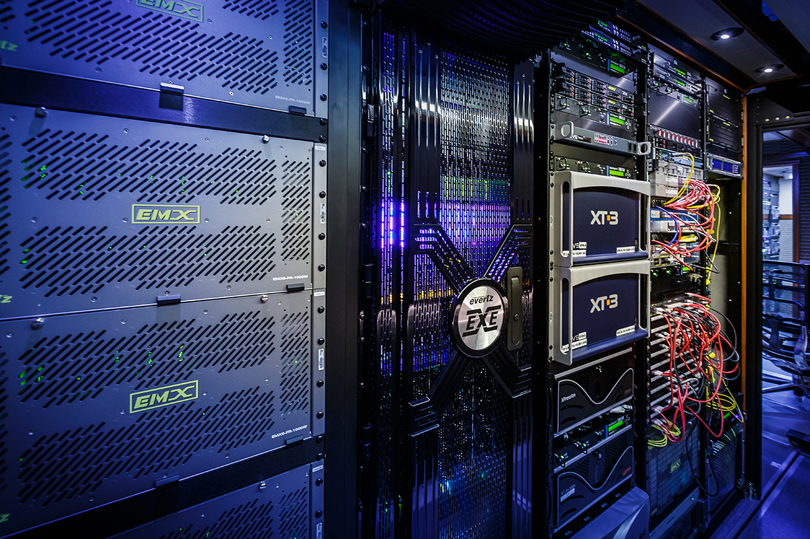

Introduction
My name is Jacob Young. I am a second/third year Computer Science Student (during this work term) with a minor in Mathematics from the University of Guelph. This page will document my 8 month work term (May - December, 2017) at Evertz Microsystems in Burlington, Ontario, Canada. It is my goal to explain the numerous ways that this work term has made me grow as both a Computer Science student and as an employee.
Employer Information
Evertz Microsystems is a Canadian company founded in the late 1960s. They are a global leader in designing and manufacturing multimedia products for the film/television industry. The solutions created by Evertz help with content creation, distribution, and delivery. Their offices are located all over the world; such as, the HQ in Burlington (within one hour of Waterloo and Toronto), the United States, the United Kingdom, Germany, the United Arab Emirates, India, Hong Kong, China, Singapore, and Australia. Some of their equipment and solutions are delivered to television sets, on-demand services, WebTV, IPTV, and mobile devices. Some of Evertz' clients include, AT&T, ESPN, GOOGLE, FOX, NBC, CBS, HBO, and the BBC. Evertz has been named one of Canada's 50 Best Managed Companies for 8+ years in a row.
 This is a truck used by the WWE. They use the Evertz EXE IP router and other devices to deliver their content. Information found hereJob Description
During my 8 months at Evertz, I was a student design engineer for the VistaLINK® PRO (referred to as VLPro hereafter) software. My overall role and purpose for this was to debug the many devices/products that can be connected to the software; this was done so I understood how the software has been developed and the functionality while in use. There were a few versions of the program; all written in Java. When updating VLPro in one version, the other two also had to be updated. The changes I made in the development version were shared to other members of the VLPro group using version control software and creating patches for the released version to clients and hardware engineers within Evertz.
After the first few weeks of product support, my role at Evertz started to expand to adding new features and solutions.
Some of these include:
- UI testing suite in Squish for autogenerated GUI components
- using Mockito and JUnit testing of web application backends and functionality
- adding new components for the VLPro system as issues arose
- editing an application made in the Spring Framework and then creating/editing the same application with a Spring backend and an Angular frontend
- adding features and helping set up a new version of another application in JavaServer Pages (JSP) and then the Spring Framework
- creating an internal FAQ page in JSP for a program to help with VLPro
These tasks I was assigned taught me how to learn new technologies independently that I might not have had a chance to learn about in school.
Goals
While at Evertz Microsystems, my goals mainly consisted of learning coding practices with some soft skills like communication and working in teams. My goals were: become proficient in the Java programming language, learn how to interface code with the Internet, learn how to transfer code between frameworks, being able to orally communicate what I had written, and to write effective comments about my code. My supervisor helped me immensely with reaching my goals. He would assign tasks that were extremely relevant like product support to learn more about Java, tasks for web based applications written in multiple frameworks, as well as giving me the opportunity to explain what I had done orally and in the comments of the code with him and other members of the team.
Reflecting on my goals, I was extremely successful in the majority of them. For my learning Java goal, I was able to learn about lambdas, usage of streams, using Java as a backend with a repository and HTTP requests, and removing redundant code. This was further knowledge from what was taught in school; a few of these are specific to Java 8 or newer and were not taught to me. I now have a further understanding of the intricacies of the Java language. For interfacing code with the Internet, I successfully learned my first few frameworks to accomplish this. Mainly, JavaServer Pages with Tomcat, Spring Boot, and Angular. I was able to add features to applications written in all of these correctly. During my work term, there was transferring code into new frameworks for existing applications. I was able to translate this code to the specific framework as needed. The behaviour and features were similar between the old and the new versions. Writing the comments was also a success. I was able to write them for all code that needed it. The team members were able to understand what I had written when I combined my comments with oral explanations. The only goal that needs improvement is oral communication. I was able to explain the code that I had written to the team when asked and when they were confused. I had difficulty describing any issues I had with the VLPro code and why it did not behave as expected. Overall, I need to improve this skill when I do not have visuals to help explain my thoughts/ideas.
Conclusions
This was my first co-op placement, and it was a great learning experience for the type of work I could be performing in the future. Evertz Microsystems was a superb company to work at in this regard. They helped me to improve my coding skills in the languages that I was already familiar with while putting trust in me to write code in frameworks, technologies, and languages that were new to me. This work placement gave me the opportunity to become more comfortable with jumping headfirst into writing/coding applications in unfamiliar languages. I can learn any new framework/language if given the opportunity. I also learned the value of testing and writing test cases for an application.
Improved Technologies (Languages, Frameworks, etc.)
- Java
- Python
- HTML
- CSS
- Git
New Technologies (Languages, Frameworks, etc.)
- JavaScript
- TypeScript
- Squish by Froglogic
- Spring Framework
- Angular Framework (Angular 2+)
- JavaServer Pages (JSP)
- Mockito and JUnit
- SVN
I also feel I have improved upon my ability to be a better team member. I had the opportunity to explain myself and work closely with my other team members. I am extremely thankful that they gave me the chance to practice and learn new skills to boost my appeal as a future candidate for other employers.
Acknowledgments
I would like to thank my supervisor Philips Benjamin, VLPro project lead Colin Brown, TJ Walker, Matthew Fluder, Farhan Haq, Vincent Liu, and fellow Guelph co-op student ("Guelph 2") Nolan Mullins for working with me during my 8 months at Evertz. They really helped me to improve my skills not just with coding, but my soft skills as well.
I would like to thank computing co-op advisors Laura Gatto and Kate McRoberts for running workshops and events to help me connect to employers in my job hunt. They helped me understand where my knowledge stood before I had work experience as well as answered any questions I had for them. I appreciate their commitments to the computing co-operative education program's success.
I would like to thank academic advisor Greg Klotz for taking the time to read this work report. I appreciate the amount of time it takes to read every co-op student's report.